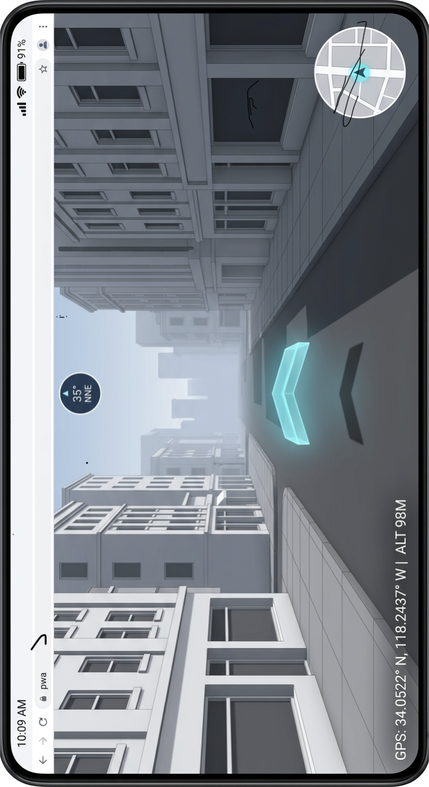

NAVIGATOR / ENGINEERING RECORD / 0.2
Real streets. A bounded world.
An OSM first-person exploration PWA designed around a small working set. Prototype A proves the rendering and manual controls; Prototype B tethers the camera to real GPS fixes and the compass, one 800 m square at a time, with manual controls kept as the fallback. Prototype D adds a user-observed shadow alignment and optional temporary heading offset; camera correction and route navigation remain later stages.
System architecture
The full target architecture below is a plan. Only the items marked “implemented” are present in this release.
webkitCompassHeading after requestPermission() in the tap). Implemented: explicit user shadow alignment. Planned: ephemeral camera samples.Service worker caches the built app, icons, architecture document, and bundled OSM snapshot. Same-origin requests only; live Overpass responses are never persisted in this stage. Live refreshes and GPS squares are session-only. The supplied reference image is excluded from offline precaching.
The local metre frame is anchored to the loaded area's origin. On each accepted fix the app checks whether the 180 m view radius still lies inside the loaded bounding box. If not, it downloads the 800 m square centred on the fix (or reuses the bundled snapshot when the fix lies inside the fixed LA box), re-projects the player and GPS target into the new origin, and disposes the old geometry. Downloads are serialised and back off 30 s after a failure. This is a proposed adaptation of the later sector-streaming design, not that design: one source square is loaded at a time. Prototype E prefetches prepared geometry inside that square; there is no network-chunk prefetch. Leaving the square before the next download completes shows fog with no geometry beyond the loaded data.
Decisions and corrections
- MapLibre owns the eye-height camera. Batched OSM polygon extrusions use a Three.js custom layer rather than native
fill-extrusion. This is an explicit adaptation: it makes exact draw-call limits, procedural façades, and metre-based fog/cutoff inspectable. Native MapLibre fog requires terrain. The shared custom layer preserves real depth testing. - A hard limit is not the same as hiding objects. Chunks outside the working set are evicted from the prepared geometry cache. Active batches are replaced when chunk selection changes after movement, and old GPU buffers are disposed. Every fragment beyond 180 m is discarded. A building intersecting the radius can still submit geometry outside it; total submitted vertices remain capped. Roads now follow the active chunk set. Up to four chunks ahead of travel are prepared for reuse. This is the Prototype E radius pass, with Prototype F graph traversal for matching preindexed source data.
- No full VIO in a static PWA. The plan does not promise ARKit/ARCore pose tracking through ordinary browser sensors. Full visual-inertial odometry would require additional platform capabilities and a separate validated design.
- Facing direction is derived, not read. DeviceOrientation reports the device frame, not where the user looks. The app builds the W3C rotation matrix and projects two device axes onto the ground: screen-up (phone flat) and the rear-camera axis (phone upright), using whichever projection is longer. Both coincide when the phone is only pitched, so the switch is not visible. Screen rotation is applied to the flat case. Only
absoluteevents orwebkitCompassHeadingare used; a relativealphais never shown as north. Magnetic declination is not applied in this prototype (about 12° east in Los Angeles; roughly ±15° at the extremes of the contiguous US). - The Geolocation API has no rate control. “Adaptive polling” is therefore implemented as rejection of noisy fixes, an idle render loop once the pose settles within 1 cm and 0.05°, and stopping both sensors while the tab is hidden. A receiver's own duty cycle is up to the platform.
- Sun azimuth alone cannot calibrate heading. Location and time predict a world bearing, not the direction the device is facing. Tier 1 now uses explicit user alignment along a shadow from an upright object on level ground; without that observation it is only a prediction. Cloud cover and indoor use can make it unavailable.
- Street vanishing points are a proposed adaptation. Detection is established computer vision, but matching it to the correct OSM street bearing, rejecting poor scenes, and resolving the 180° ambiguity need measured validation. No accuracy number is claimed.
- OSM is not a façade survey. Real footprints and tagged heights are used where available. Untagged heights use deterministic building-type defaults; tagged levels use 3.2 m per level. Heights are clamped to 3–180 m in this prototype. Windows and pavement patterns are procedural, road widths are categorical defaults, and terrain is flat. The scene is not photogrammetry.
- No universal iOS memory ceiling is assumed. The PDF's 300–500 MB range is not treated as a browser guarantee. Device and OS behavior varies. JS heap, where exposed, excludes GPU and browser memory. Actual iPhone walking and memory-pressure tests remain required.
Budgets and measurement
These are enforced implementation limits, not observed performance promises.
- 180 m visible radius; 120 m manual movement boundary.
- 160 buildings and 90,000 building vertices maximum. Budget pressure replaces complex footprints with bounding boxes, then omits remaining distant buildings.
- 18,000 road vertices maximum; three world draw calls (ground, roads, buildings). Pixel ratio capped at 1.5; antialiasing disabled.
- 8 MiB maximum response; 30,000 OSM elements maximum; 35 s timeout per provider, at most two providers per explicit refresh. The fixed area is never expanded implicitly.
- Rendering sleeps when idle. Worker rebuilds only after movement exceeds 12 m. Geometry is disposed on replacement; buffer pooling is not yet implemented.
- GPS: ±60 m accuracy gate; 15 m/s plausibility gate beyond combined accuracy radii, recovering after three consecutive rejections or 30 s; one 800 m square loaded at a time; a new square only when the view radius leaves the loaded box.
The Performance panel reports the observed animation-frame interval while moving, world draw calls, loaded building count, submitted vertices, typed-array bytes, fetch + worker latency, loaded area, optional JS heap, reported GPS accuracy with used/rejected fix counts, fix interval, and compass accuracy where the platform reports it (iOS only). Frame interval is not GPU render time. GPU memory is marked unavailable rather than estimated from unrelated counters.
Privacy and platform behavior
Sensors are off until the user taps “Use my location” and confirms a prompt that names what is requested and why. Prototype B then requests Geolocation and, on iOS, motion & orientation; it never requests microphone or camera. Readings are held in memory (src/positioning.js) and no code path writes them to storage or sends them to any server of ours; no account, analytics, or server-side application code exists. Enabling GPS downloads the 800 m square around the fix from Overpass or the OSM API, which tells that service the user's approximate area and exposes ordinary network metadata such as IP address; the prompt says so. GitHub receives normal hosting requests. “No app tracking” does not mean a third-party host has no access logs.
Sensors require HTTPS and user consent. iOS orientation permission must be requested from a user gesture, so DeviceOrientationEvent.requestPermission() is called synchronously inside the enabling tap before any await; generic alpha is not an absolute compass heading and is ignored unless the event is marked absolute. Desktop browsers usually deliver no orientation events at all; the app declares the compass unavailable after 4 s and keeps manual look. Hiding the tab clears the position watch and orientation listener. Later camera samples must stay in memory, be processed at low duty cycle, and have no storage, network, recording, or persistent queue path. Browser storage can be evicted; persistence requests are not guarantees.
Reference orientation

The original asset is preserved byte-for-byte. This document rotates its display exactly 90° clockwise. The reference establishes the cool gray streetscape, restrained instrument overlay, and cyan accent. The in-world chevron follows the resolved viewing heading. Shadow alignment is available in Prototype D; camera heading correction remains a later stage.
Build sequence
- Architecture — this document.
- Prototype A — released. Fixed OSM area, manual controls, bounded geometry and fog.
- Prototype B — implemented. Opt-in GPS and compass tethering, fix filtering and smoothing, 800 m square re-anchoring, manual fallback per sensor.
- Prototype C — released. Eye-height chevron consumes the resolved camera heading. Automated depth checks cover full and partial occlusion and real OSM geometry through the production renderer.
- Prototype D — included in v0.1.1. NOAA solar prediction plus explicit shadow alignment, disagreement indicator, optional temporary offset and automatic expiry.
- Prototype E — included in v0.1.1. Radius-based geometry cache, four directional prefetch chunks, 28 resident cap, batched rendering, disposal and live memory estimates.
- Prototype F — included in v0.1.1. Ingest-time street-face graph and chunk memberships for the bundled source; verified radius fallback for live areas; measured lookup comparison and optional GPS free look.
- LOD and impostors — measured transition quality.
- Tier 2 — vanishing-point correction and frame-persistence audit.
- Bulk downloads — quota and explicit size confirmation.
- Local PMTiles byte ranges — compare memory footprint.
- Worker consolidation — stress-test frame stability.
- Fallbacks — denied sensors, lost location, missing area.
- Final PWA validation — physical iPhone and Android testing, offline walking and 15–20 minute continuous sessions. Basic packaging is already included to make Prototype A installable.
Acceptance for Prototype B
On a phone outdoors: enable location, confirm the view appears on your actual street within a few seconds of the first fix, walk a block and confirm the camera follows without jumps larger than the reported accuracy, turn and confirm the view turns with you (iPhone and Android Chrome; desktop has no compass), and note the Performance panel's fix interval and accuracy. Then walk out of the loaded square and confirm a new square downloads. Record fps and accuracy; Chromium-driven checks in docs/validation.md are not a substitute for this. Without an applied shadow alignment, heading remains uncorrected.
Hovering direction guide
The cyan chevron hovers at 1.65 m eye height, 4.5 m ahead of the view, with a 30° tilt for readability. It follows the resolved compass heading while GPS is active, including during free look, or the manual viewing heading otherwise. Prototype D optionally applies a shadow-alignment offset; camera correction remains a later stage. Body, edges, glow and shadow all use scene depth testing. Four additional draw calls bring the total budget to seven; the main mesh has 132 vertices. This indicates compass or manual heading, not measured travel direction or a planned route.
Design ideas: reusable arrow geometry and separate direction state from the Organic Maps Project. No Organic Maps code, assets or map files were copied.
Prototype D: shadow alignment
Hold the phone flat, screen up, aligned from an upright object's base toward the tip of its clear shadow on level ground. Record the alignment, compare raw compass to predicted shadow bearing, then optionally apply the offset to both camera and chevron. A difference of 15° or more is flagged; it can include magnetic declination, interference or alignment error. This user-observed adaptation is not continuous drift detection. Cloudy, indoor, low-sun and near-zenith conditions leave the ordinary compass available.
The session-only check expires after 10 minutes, 100 m displacement, stale sensors, rotation or hiding the app. It adds no camera use, storage or network calls. Inputs must include recent GPS and compass, a flat phone and a short stable heading window. NOAA's approximate calculation is an established technique; alignment gates and the temporary offset policy are prototype design choices, not validated accuracy bounds. See README and docs/validation.md for thresholds, measurements and remaining physical-device tests.
Prototype E: bounded chunk streaming
The worker indexes the current downloaded area into 128 m buckets, selects up to 24 active chunks intersecting the 180 m view radius plus a 12 m margin, and prepares up to four chunks ahead of travel. Existing cached geometry is reused; chunks outside the working set lose cache references. Active buildings and roads share batched meshes, keeping seven draw calls; replaced GPU buffers are disposed. Global building/road caps and the fixed shader cutoff remain enforced. Under pressure, simplification and omissions take precedence over exceeding those caps.
The performance panel reports resident counts, promotions, evictions, GPU mesh disposal counters, typed-array bytes, source-coordinate payload estimate and chunk update latency. The CPU/GPU geometry estimate excludes temporary allocations and browser/driver overhead. Source OSM for one area remains parsed in the worker. Prototype F adds an offline-generated street-face graph over these chunks for the bundled source. Live areas retain uniform buckets; PMTiles byte-range reads remain later work. Prefetch here prepares geometry already downloaded; it adds no network requests.
Prototype F: precomputed street sectors and GPS free look
The bundled graph contains 14 street-derived faces, 28 adjacency edges and memberships for 60 chunks. Offline Shapely/GEOS polygonization uses ground-level street centerlines plus the source-envelope boundary. This rendering-sector adaptation includes fringe faces; it does not claim surveyed blocks, collision or pedestrian connectivity. The worker verifies the graph against the source hash and structure, locates the player with a precomputed cell table and traverses face adjacency before applying the established chunk bounds and budgets. Live data without a matching graph retains radius lookup; no graph is generated on-device.
The graph and radius paths returned identical candidates at 441 benchmark positions. One local benchmark measured 0.0115 ms per graph query versus 0.0075 ms for the radius scan, so this small dataset shows no speedup. The startup query visits all 14 sectors and collects all 60 chunks. The Performance panel exposes the active lookup path and measured cost; the benchmark is repeatable with npm run bench:sectors.
Compass-follow remains the default. Dragging temporarily looks around through an unlimited yaw angle; a sweep across 80% of the viewport covers 360°. Release or cancellation smoothly returns to the latest resolved phone heading, while GPS and compass continue updating. While GPS is enabled, tap “View: compass” to switch to free look; drag or turn with the controls while GPS keeps moving position and the chevron keeps the resolved compass bearing. The sensor bearing is unchanged. Tap again to ease back to compass-follow. Stopping GPS resets this option; denied/absent compass keeps the existing manual fallback.
Primary references
- Shapely polygonization, line union and spatial queries (offline ingestion only)
- NOAA approximate solar equations
- NREL SPA independent reference example, Table A5.1
- MapLibre first-person camera example
- MapLibre custom 3D layer interface
- MapLibre sky and fog constraints
- OpenStreetMap attribution and ODbL
- PMTiles documentation — future storage stage